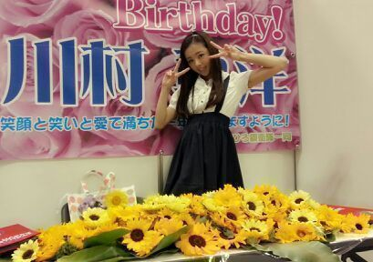
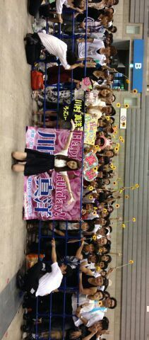

| 2013/07 28 Sun | 川村真洋 皆のあたたかさに本当に感激しま した(/.>_<)/ ありがとう。ろっ てぃー |
こんばんわっ。
ろってぃ−です =・∨・=
今日は 横浜で個別握手会でした！
今日は 本当 本当 本当
びっくりしました\(><)/
ありがとうございましたっ)))
私は 握手会が5部からなんですけど
5部が始まる前に
『まひろ来てぇ〜。』って
スタッフさんに呼ばれ
会場の方へ出たら
ファンの皆さんがたくさん集まって
誕生日を祝ってくださいました☆
１人１本 向日葵を持って
happy birthday ♪を歌って
くださいました・・・・
(/・ω・。\*)涙
ほんっとに嬉しかったです。
とゆうかね 、
めっちゃびっくりしました！
向日葵を見た瞬間
『あっ！ サスケだ！！』って思ったよ/
「サスケ歌ってーーー！」
とゆうファンの方に言ってくださり
急きょ アカペラで
『〜Sasuke〜★』、歌いました^^
緊張してしまい、最後まで
歌いきれなかった！
ザビの途中までだけど
皆さんが 曲に合わせて
向日葵を横に動かし
静かに聞いてくれて
とってもも嬉しかったです(*^^*)
握手会が始まると・・・・・
じゃんっ♪

わ〜〜 (〃∨〃)
机からこぼれ落ちそうな向日葵。
またもや これにも驚かされました^^
自分のレーンに行ったら机に
緑の葉っぱがいっぱい置いてあって
『なんだ？なんだ(・・;)？』
『え、もしかして...』
と思って ファンの皆さんのことを見ると
皆 向日葵を持って 並んでくれていてね...
握手する度に、
一つ また一つ... って葉っぱの上に
置いてってくれて
だんだん だんだん増えてきて
最後には、200個の向日葵が
机の上に積み上げられました(〃∨〃)
いやぁ〜
ホンッッッとに嬉しかった！！
今日のために 3ヵ月前から
一生懸命動いてくださってたんですね...
なんだか まひろのために
こんなに必死になってくれて
本当にこの感謝のキモチを
どう表現したらいいのやら
ありがたいキモチでいっぱいです(*^^*)！
こんな誕生日は
生まれて初めてです。
最高の誕生日プレゼントです☆！
握手会で こんなに花が
いっぱいになるってゆーのも
見たことも聞いたこともない(>∨<)
もう、今日 皆にこんな嬉しいことされて
Rottyは普通でなんかおられへんでー☆笑
８月から、始まる
Zeppライブツアーのリハーサル
めっちゃ頑張るからねぇーっ、
皆のために、期待に応えたいから！
とゆうか 頑張れる！！！☆
絶対 恩返しする。
皆さんの喜んだ顔みる！
まひろ頑張る！
「Rotty夢☆の方ってどーして
こんなにあったかい人ばっかなの？？」
って今日すごい言われたよ(*^^*)
ありがとね、本当.
皆のおかげだから♪
皆のこと、、、本間
「 大ーーーー好きっ (〃∨〃)！！！」
最高です☆☆☆

ワー ☆
今日は本当にありがとうございました！
そして お疲れ様でした(*^^*)
また 更新します。
ろってぃーより(*´ω｀*)のし